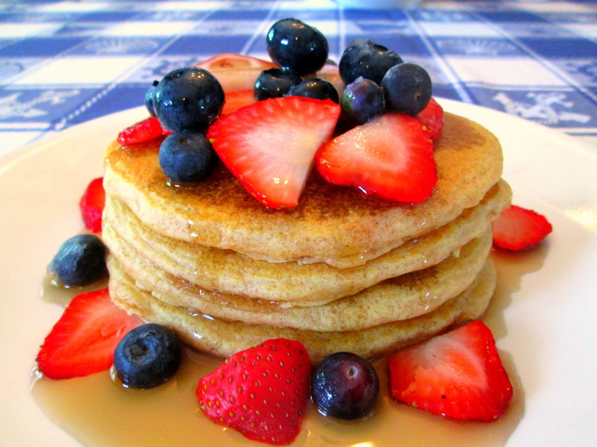

Home
Pancakes

Description
Mix 200 g flour, 2 eggs, 300 ml milk, 1 tbsp sugar, 1 tsp baking powder, and a pinch of salt until smooth.
Heat a non-stick pan with a little oil or butter. Pour a ladle of batter, cook until bubbles form, flip, and cook the other side until golden.
Repeat with remaining batter. Serve warm with syrup, honey, or fruit.
Ingredients
- 200 g flour
- 2 eggs
- 300 ml milk
- 1 tbsp sugar
- 1 tsp baking powder
- Pinch of salt
- Butter or oil for frying
- Syrup, honey, or fruit (optional)
Steps
- Mix flour, eggs, milk, sugar, baking powder, and salt until smooth.
- Heat a pan with butter or oil.
- Pour a ladle of batter, cook until bubbles form, then flip.
- Cook the other side until golden.
- Serve warm with syrup, honey, or fruit.